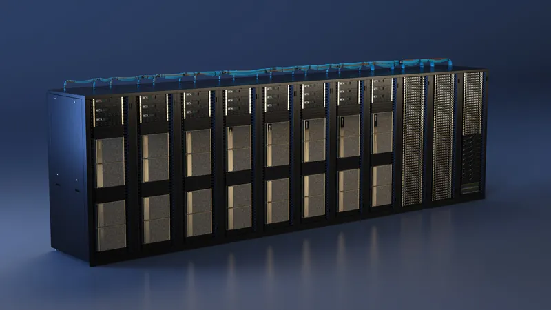
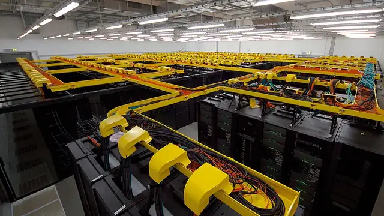

EU launches AI-in-science pledging drive: NVIDIA pledges 35 supercomputers, Elsevier 4,000 free AI licenses
Brussels wants Europe's scientists to stop being priced out of the AI era for lack of compute — and today it started collecting corporate commitments. At the AI in Science Summit in Dublin, the European Commission launched the AI in Science Enablers Initiative, a campaign to turn private-sector and philanthropic goodwill into concrete pledges for European research. The first pledges: NVIDIA is putting supercomputers, open models and training on the table, and Elsevier is offering 4,000 complimentary AI licenses plus an estimated €1 million a year in funding and in-kind support.
- Who: the European Commission (Commissioner Ekaterina Zaharieva), NVIDIA, and Elsevier.
- What: launch of the AI in Science Enablers Initiative — a pledging campaign for private-sector and philanthropic support of European AI research, connected to the RAISE framework (Resource for AI Science in Europe).
- When and where: October 15, 2026, at the AI in Science Summit in Dublin, with over 1,000 participants.
- NVIDIA's pledge: 35 supercomputers in development across Europe — billed as the continent's largest single-year supercomputing buildout — serving more than 3 million researchers; 250+ open models, 250 open datasets, 1,400+ open-source projects; a free, openly licensed Deep Learning Institute courseware hub; and compute access via national AI factories in France, Spain and Sweden plus EuroHPC centres CINECA and JSC.
- Elsevier's pledge: 4,000 complimentary licenses — 1,000 each of LeapSpace, ClinicalKey AI, ClinicalKey Nursing AI and Complete Anatomy — and an estimated €1 million a year in funding and in-kind support.
- Context: the launch comes a day after Google DeepMind and Google Cloud offered 200 Commission-chosen European researchers frontier-model access and $3 million in compute credits — a separate pledge against the same compute gap.
The Dublin launch
More than 1,000 researchers, technologists, business leaders and policymakers gathered in Dublin for the AI in Science Summit, where the Commission formally launched the Enablers campaign. The stated goal: to maximize the impact of private-sector and philanthropic support for the European research community, and to make those initiatives as visible and accessible to researchers and scientific organizations across Europe as possible.
The initiative sits inside the Commission's RAISE programme — the Resource for AI Science in Europe — a shared framework for funneling private support to the continent's research community. "Europe's ambition in AI in science can only become reality if we bring together the strengths of our research community, industry and other partners," said Ekaterina Zaharieva, the European Commissioner for Startups, Research and Innovation. "Through the AI in Science Enablers campaign, we are turning this ambition into concrete commitments that give researchers access to the tools, expertise and resources they need to innovate." The summit also drew the lab giants: EU research Commissioner Zaharieva met DeepMind co-founder Demis Hassabis bilaterally on the sidelines.
NVIDIA: 35 supercomputers, open everything, free training
NVIDIA's pledge starts with its open ecosystem: more than 250 open models, 250 open datasets and over 1,400 open-source software projects — spanning large language models, healthcare, robotics, climate science, physical AI, autonomous vehicles and scientific research — available on Hugging Face and GitHub. Researchers also get NVIDIA's agentic building blocks: the Nemotron family (open weights, training data and recipes), the BioNeMo Agent Toolkit, PhysicsNeMo libraries, Earth-2 models and ALCHEMI NIM microservices, aimed at biology, chemistry, molecular design, weather and climate, energy, engineering, physics and materials science.

Training is part of the package: the NVIDIA Deep Learning Institute has launched an open-source courseware hub with hands-on materials on accelerated computing and deep learning — freely downloadable and openly licensed, with no enrollment, fees or deadlines — designed to plug into university curricula, supercomputing-centre bootcamps and developer events.
On compute, NVIDIA is working with cloud partners and Europe's national AI factories to open sovereign capacity to startups and SMEs. The Inception startup programme is already collaborating with AI2F in France (four months in, "demonstrating strong results"), the BSC AI Factory in Spain is rolling out its first full accelerator programme, and the Sweden AI Factory — one of Europe's 19 EuroHPC-funded AI factories — is opening its infrastructure to Inception startups and SMEs in life and materials sciences, autonomous systems and gaming. EuroHPC centres such as CINECA and JSC already give academia and startups free access to NVIDIA GPU infrastructure for open research, backed by office hours, bootcamps and hackathons — and NVIDIA is co-organizing a European AI hackathon this month alongside Austrian Scientific Computing, the Leibniz Supercomputing Centre, the High-Performance Computing Center Stuttgart and the Cyprus Institute.
And the headline number: NVIDIA says it is powering 35 supercomputers currently in development across Europe — the continent's largest single-year buildout of supercomputing capacity — which together will serve more than 3 million researchers. Read NVIDIA's announcement via HPCwire.
Elsevier: 4,000 licenses and a €1M talent pipeline
Elsevier's pledge, announced in a press release datelined Dublin today, covers 4,000 complimentary licenses across four products: 1,000 each of LeapSpace — its research-grade AI workspace, paired with a proposed Europe-wide challenge to be developed with the Commission — ClinicalKey AI (EHR- and API-enabled clinical decision support), ClinicalKey Nursing AI, and Complete Anatomy, its 3D anatomy platform. The licenses target European researchers, healthcare professionals and students.

Beyond the software, Elsevier is committing an estimated €1 million a year in funding and in-kind support: at least three new collaborations per year with European research institutions, drawing on its data science, ethics and software experts; participation in the Horizon-funded AIRIS project on AI-enabled hypothesis generation in biomedicine; a new Centre on Hybrid Intelligence for Trustworthy Research with the University of Amsterdam and Vrije Universiteit Amsterdam; and training for roughly 10 PhD candidates, postdoctoral researchers and master's students in AI each year.
The company will work with the Commission to refine the pledge — including the scope of the LeapSpace challenge — in the weeks after the summit. Full details in Elsevier's announcement.
Why it matters
The Dublin pledges land a day after Google DeepMind and Google Cloud offered up to 200 Commission-chosen European researchers direct access to frontier models — including AlphaFold 3 — plus $3 million in compute credits, a separate move against the same compute gap. Europe is spending public money to close it too: reporting around the summit puts Horizon Europe's commitment at €600 million to expand scientists' and startups' computational access, with annual AI research investment set to double past €3 billion.
The Enablers campaign is Brussels's bet that the private sector can fill the gap faster than budgets alone — and that small labs, early-career scientists and science startups, who feel the tools-compute-expertise bottleneck first, are the ones to gain. The proof, as ever, will be whether the pledges turn into real GPU-hours, real licenses and real training slots rather than logo slides. The Commission's follow-up work with Elsevier in the coming weeks will be the first place to watch.
Frequently asked questions
What exactly is the AI in Science Enablers Initiative?
It is a European Commission initiative, launched October 15, 2026 at the AI in Science Summit in Dublin, to mobilize and maximize private-sector and philanthropic support for European research — and to make those offers visible and accessible to researchers. It operates as a pledging campaign inside the Commission's RAISE framework, the Resource for AI Science in Europe.
What is NVIDIA putting on the table?
Compute, open technology and training: 35 supercomputers in development across Europe serving more than 3 million researchers; more than 250 open models, 250 open datasets and 1,400+ open-source projects; the Nemotron, BioNeMo, PhysicsNeMo, Earth-2 and ALCHEMI NIM toolkits; a free openly licensed Deep Learning Institute courseware hub; and compute access for startups and SMEs via national AI factories in France, Spain and Sweden and EuroHPC centres including CINECA and JSC.
What is Elsevier offering?
4,000 complimentary licenses — 1,000 each of LeapSpace, ClinicalKey AI, ClinicalKey Nursing AI and Complete Anatomy — for European researchers, healthcare professionals and students, plus an estimated €1 million a year in funding and in-kind support: at least three new research collaborations per year, participation in the Horizon-funded AIRIS project, a new Centre on Hybrid Intelligence for Trustworthy Research with the University of Amsterdam and VU Amsterdam, and training for about 10 PhD, postdoc and master's students per year.